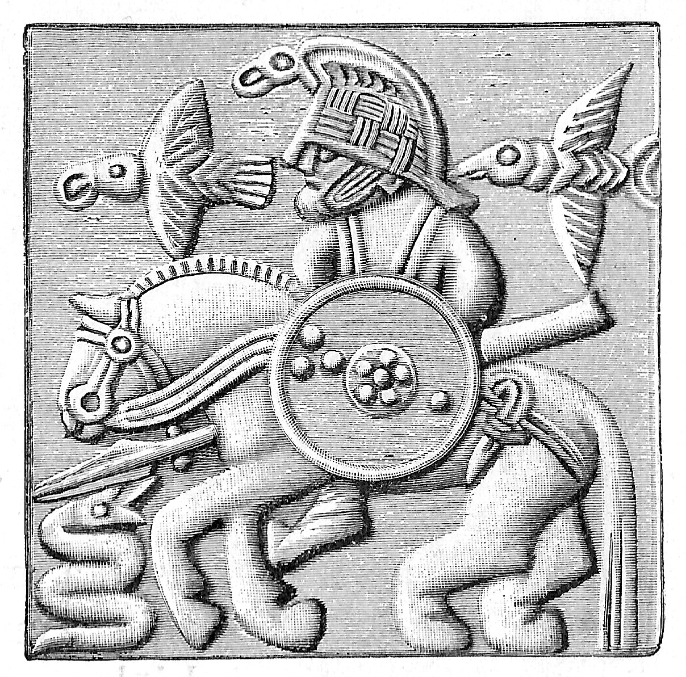

Os corvos
Sobre os corvos
Hugin e Munin
Imagens de corvos
Hugin e Munin
Aqui está um link sobre corvos na mitologia:
https://norse-mythology.org/gods-and-creatures/others/hugin-and-munin/
—Hugin e Munin.

Odin com seus dois corvos.
Personagens na Imagem
Odin
Hugin
Munin